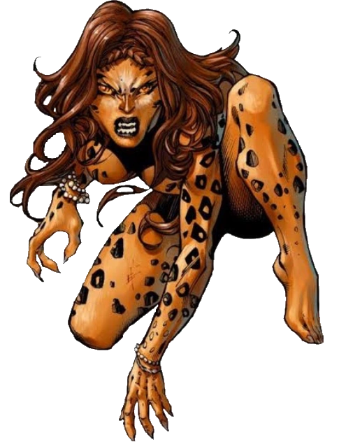

Cheetah
Archaeologist Barbara Ann Minerva always had a reputation for going to any lengths to retrieve the artifacts. Her attitude, unsurprisingly, resulted in tragedy. After growing increasingly obsessed with mythology and divinity, Barbara took her team deep into the wilds of Africa, only to be trapped and forced to participate in an ancient, arcane ritual that cursed and transformed her into a human-cheetah hybrid with blood lust.